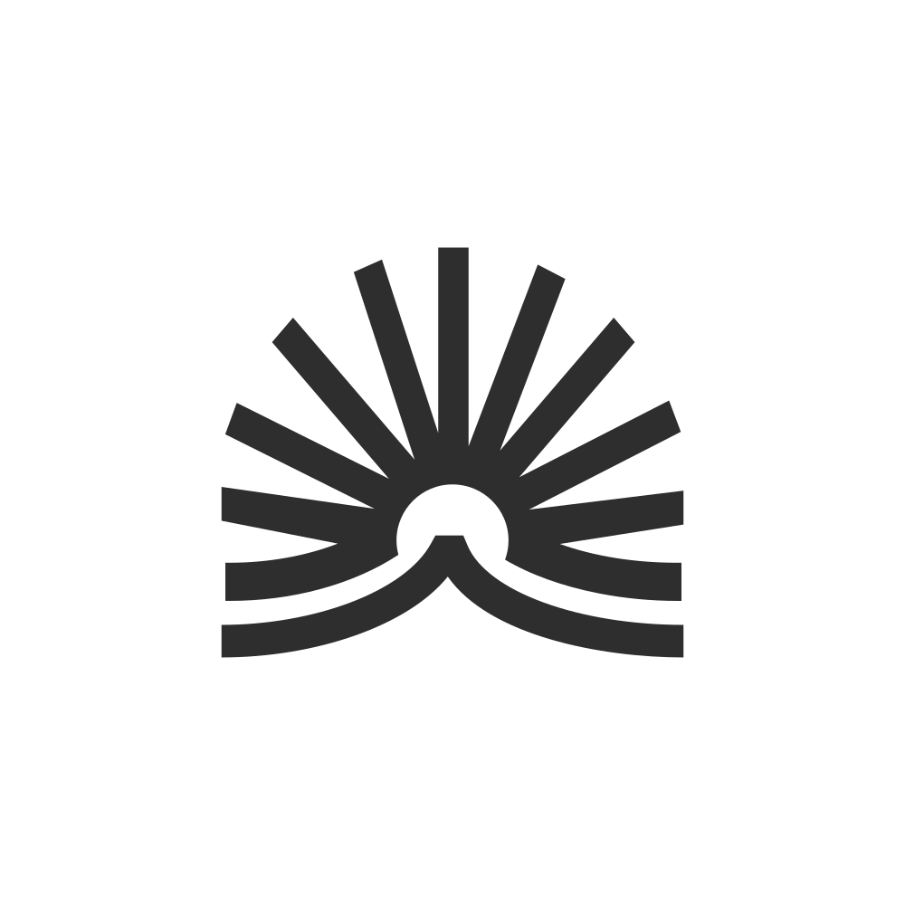
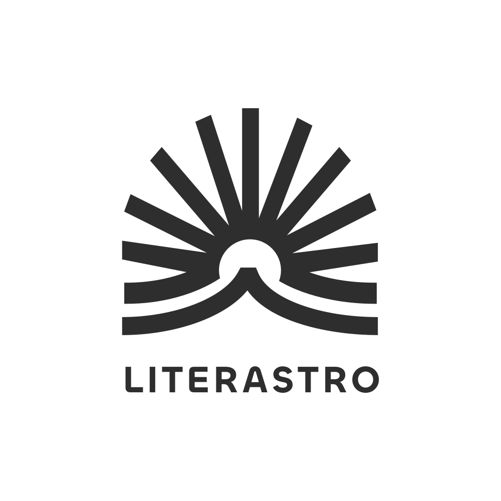
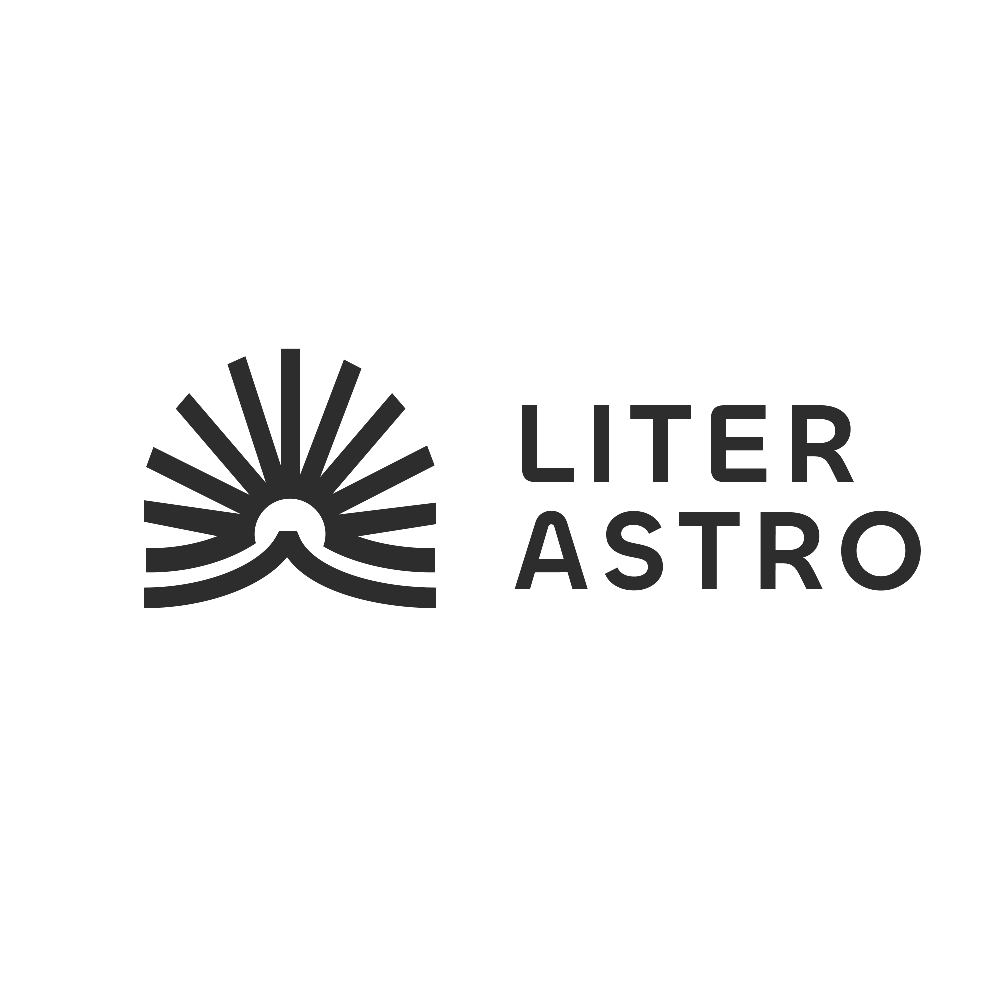
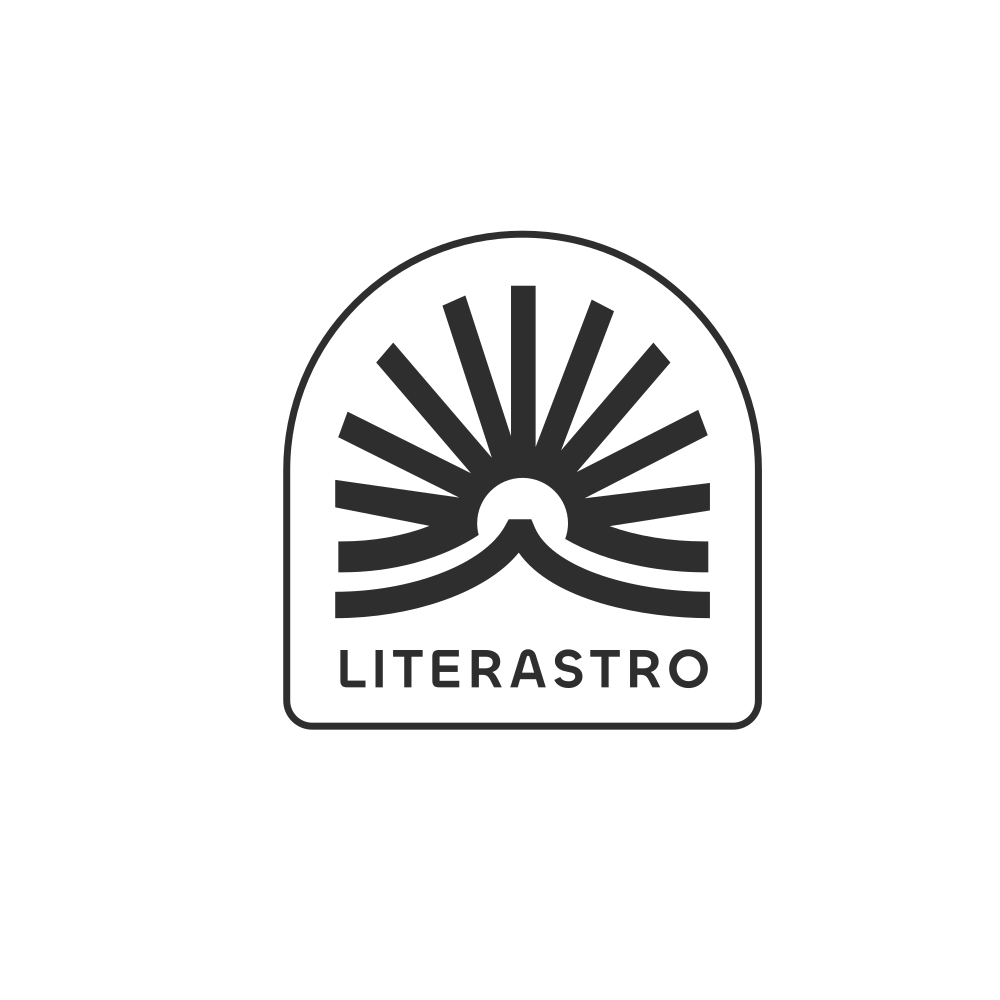
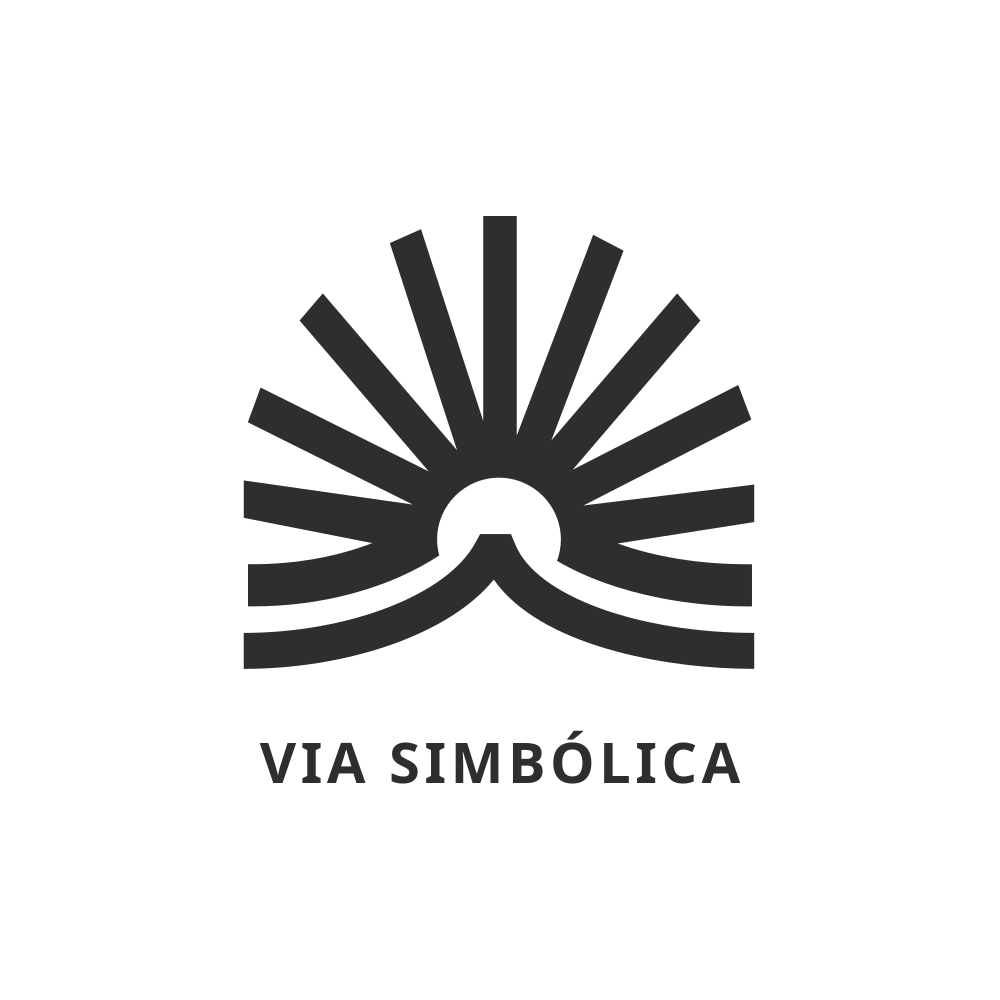
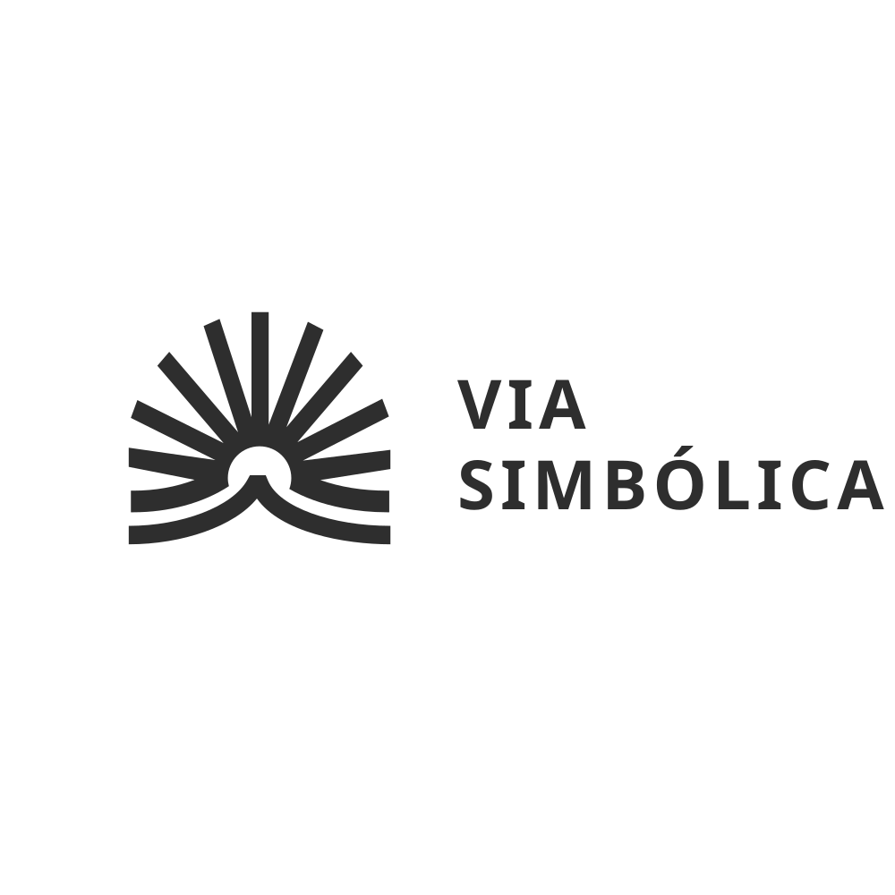
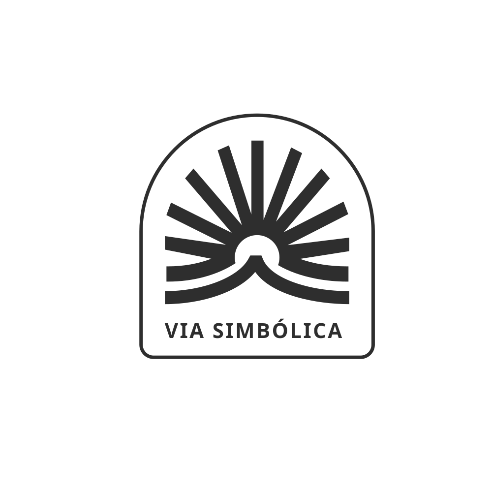
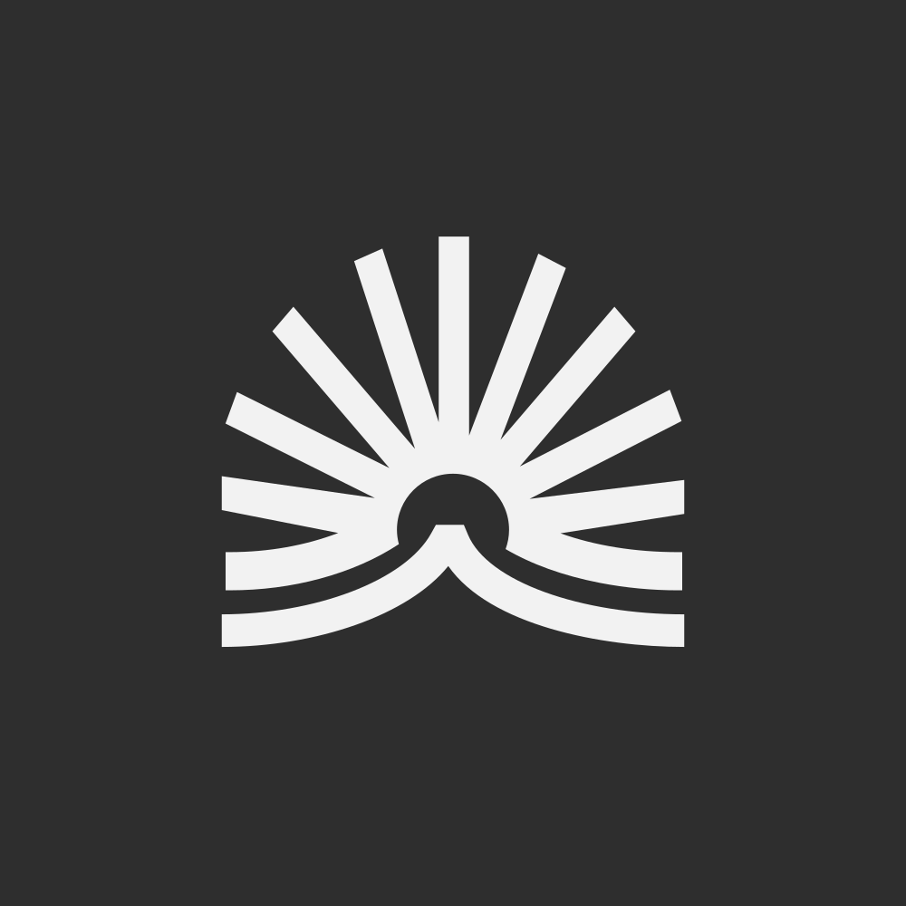
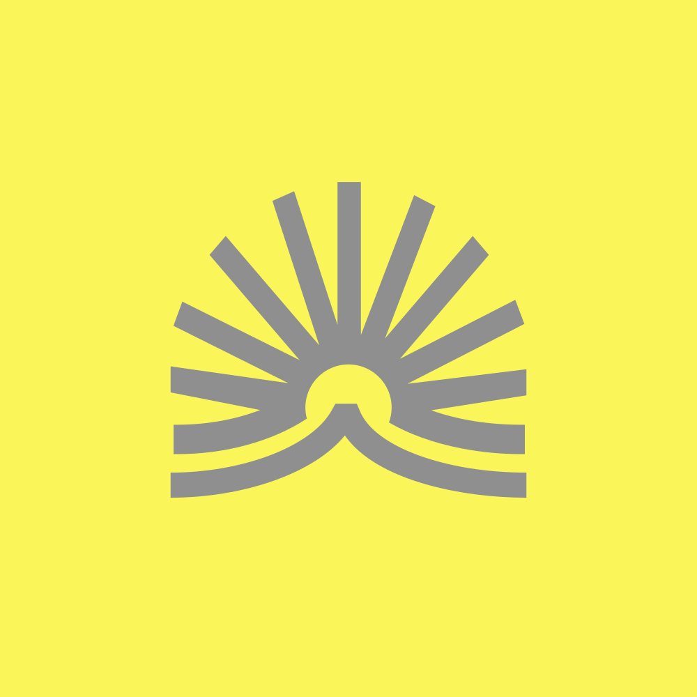

Encante-se com o mundo pela Via Simbólica.
A marca é um sol que nasce atrás de um livro aberto, e o livro também é uma montanha. Tudo o que a Via Simbólica publica deve dizer isso: leitura, amanhecer, altura, e um núcleo em torno do qual as pessoas se reúnem.
Três palavras guiam qualquer decisão: clara (nada que precise de legenda), sóbria (uma cor de destaque, nunca três) e solar (o amarelo é luz, não alarme). O tom visual é o de um bom livro impresso: superfícies lisas, cantos retos, uma cor forte por vez, texto com espaço para respirar.
Cinco cores e nenhuma outra. Roxo é a cor da marca e vem primeiro; sol é o acento, em área pequena ou como um bloco inteiro; os neutros fazem o resto. O deck da identidade é preto, branco e cinza, e as cores entram pelo logotipo e pelos objetos. Siga essa proporção: muito neutro, uma cor.
| Texto | Sobre | Contraste | Regra |
|---|---|---|---|
| tinta | fundo / papel | 12,1 : 1 | Texto principal. |
| tinta-suave | fundo / papel | 5,8 : 1 · 6,9 : 1 | Texto secundário (derivado; não consta na IDV original). |
| roxo | fundo claro / papel / sol | 5,9 · 6,6 · 5,7 | Pode ser texto. Sobre escuro não (2,1): use roxo-claro #B9A9E0. |
| sol | escuro / roxo | 11,8 · 5,7 | Pode ser texto. Nunca sobre claro (1 : 1). |
| cinza | fundo claro / escuro | 2,9 · 4,2 | Só filetes, rótulos de cabeçalho e marca. Texto só a partir de 24px, sobre escuro. |
| claro | roxo / escuro | 5,9 · 12,1 | Texto e marca sobre os fundos de cor. |
Proibido: gradiente, sombra colorida, brilho, roxo-azulado degradê, duas cores de destaque na mesma peça.
Duas famílias, as duas da Indian Type Foundry e gratuitas no Fontshare. Chillax Variable é a voz da marca: títulos, numerais de seção e o nome tipográfico. Satoshi é o texto: parágrafos, rótulos, botões. A serifa e a manuscrita do site antigo saem.
As doze áreas da vida humana desvendadas: quem você é, sua família, seu amor e sua vocação.
Três camadas, nas palavras da designer: livro / montanha (a curva de baixo), páginas / sol / multiplicidade (os raios) e núcleo / ponto de foco / reunião (o círculo vazio no centro).
Nove raios retos, um vertical e quatro de cada lado; duas linhas curvas que abraçam o núcleo como páginas; embaixo, a curva do livro aberto. Os traços têm a mesma espessura em todo o desenho, cerca de 3,4% da largura do símbolo.







Os lockups "Via Simbólica" usam o nome em texto vivo (Chillax 565, tracking 0,08em) e só renderizam certo com a fonte carregada; a versão em curvas depende dos arquivos da fonte.
As combinações entregues pela designer. Os dois pares com cinza e sol valem para a marca em tamanho grande, nunca para texto.


Pílula, rótulo em caixa alta, 48px de altura. Primário em roxo (um por vista), secundário com borda em tinta, destaque em sol (no máximo um por página). Hover sobe 2px e não muda a cor.
O eyebrow acima do título: caixa alta, tracking largo, em tinta-suave; em roxo quando nomeia a categoria.
Imagem à esquerda (obra ou material, atrás do véu quando há texto por cima), conteúdo centralizado à direita. Sem imagem, a área da esquerda é um bloco roxo com o símbolo em claro.
A comunidade que une literatura e astrologia num só lugar de estudo e amizade.
ConhecerUm bloco chapado em sol com texto em escuro: para avisos de abertura de turma, marcadores e capas. Um bloco por composição.
Turma 1 das 12 Casas: carrinho aberto até 12 de outubro.